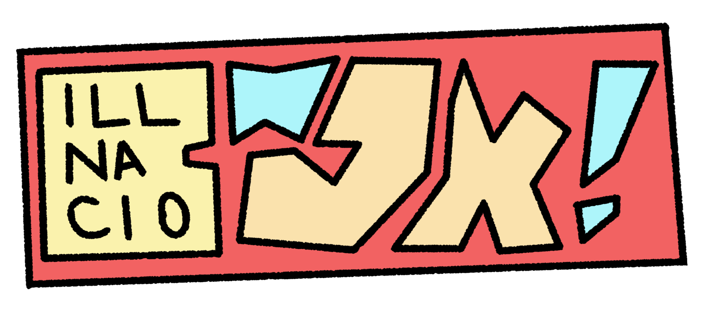

Welcome to ~Jx!
Welcome to the official ~Jx! Website, here you will find all my news and projects.
News
J_x__ Twitch Channel
June 22nd, 2019
The J_x__ Twitch channel kicks off streaming for a spanish audience. The channel, along with this website, is set to be the main source of information and content distribution for ~Jx! creative and it's derivatives.
~Jx! / Illnacio Merge Announced
June 24th, 2019
Illnacio's Creative project is renamed and integrated into the ~Jx! Creative/Entertainment Collective. The decision is made since illnacio as a concept was too restrictive for the whole project and two separate projects would've been confusing. The comics released up until this point are kept with the same attribution to illnacio, but the upcoming ones will be released under this website under the new name.
Older News & Major Events
The Heibin and Ducky Show Announced
February 28th, 2019
The Heibin and Ducky Show is officially announced through "illnacio" instagram. The project consists of a webcomic released monthly through the official website.
The Heibin and Ducky Show: Volume 1 is released
March 17th, 2019
The Heibin and Ducky Show's first volume is released through illnacio's official website. The file is obtainable as a pdf for free.
Patron announced
March 18th, 2019
A patreon profile and rewards system is implemented which consists in an exclusive extended edition including extra footage and illustrations.
The Heibin and Ducky Show: Volumen 1 is released
March 19th, 2019
The spanish translation for the first volume is released through the official website.
The Heibin and Ducky Show: Volume 2 is released
April 14th, 2019
The Heibin and Ducky Show's second volume is released through illnacio's official website. The file is obtainable as a pdf for free.
The Heibin and Ducky Show: Volumen 2 is released
April 16th, 2019
The spanish translation for the second volume is released through the official website.
The Heibin and Ducky Show: Volume 3 is released
May 12th, 2019
The Heibin and Ducky Show's third volume is released through illnacio's official website. The file is obtainable as a pdf for free.
The Heibin and Ducky Show: Volume 3 is released
June 16th, 2019
The Heibin and Ducky Show's last volume is released through illnacio's official website. The file is obtainable as a pdf for free.